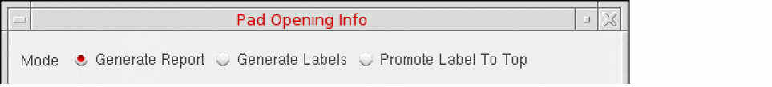
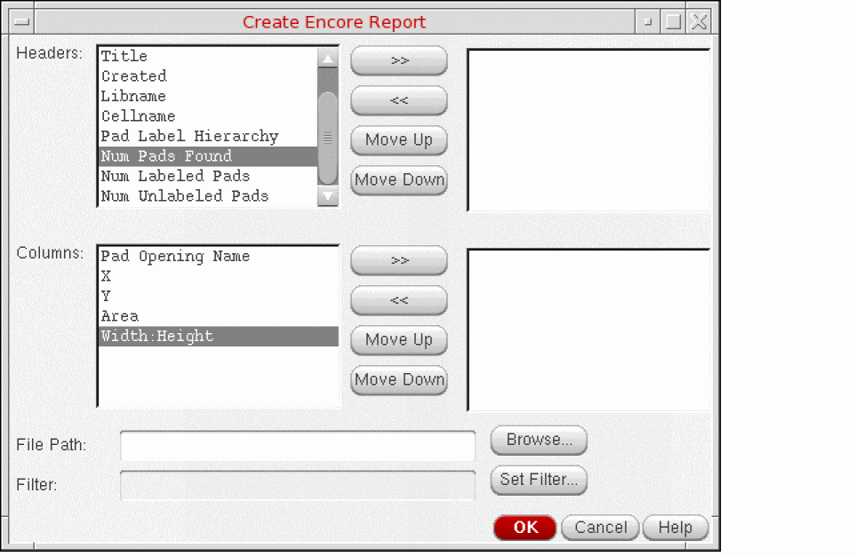
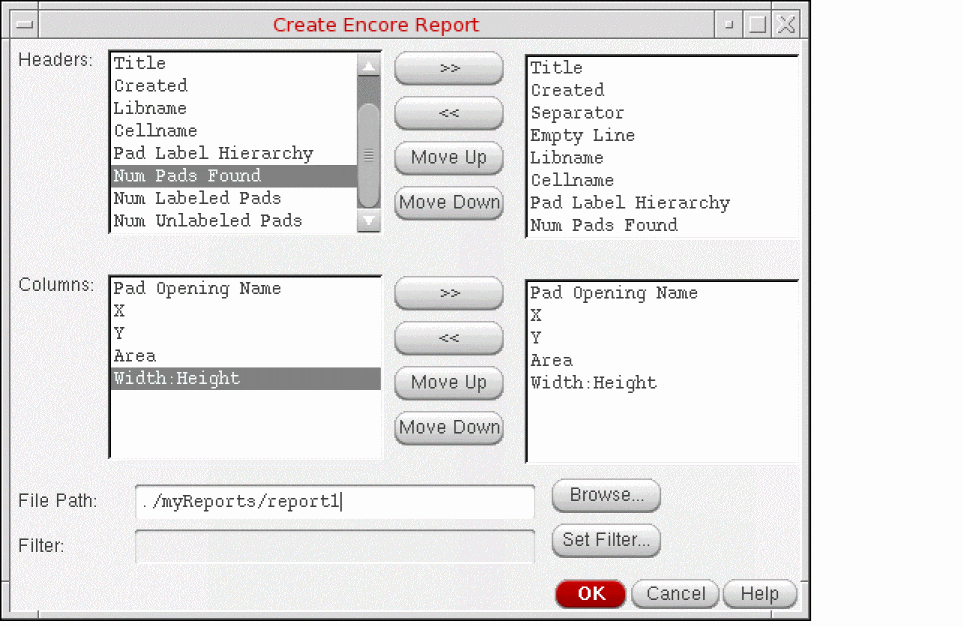

Generating a Customized Report for Pad Shapes
To create a customized report containing information about the pad shapes found in a hierarchical cellview:
- In the layout window, open a hierarchical cellview that contains bond pad shapes.
-
Choose Tools – Pad Opening Info.
The Pad Opening Info form appears. -
Ensure the mode is set to Generate Report.
 - Set the Search and Sort criteria as required.
-
In the Reporting section, choose Make Customized Report.
The Add, Del, and Edit buttons are enabled. -
Click Add to create a customized report.
The Create Encore Report form is displayed.
 -
Specify the headers to be included in the report by selecting an option from the Headers list on the left and clicking the >> button. The selected header name is moved to the box on the right.
To remove a header from the report, select the header in the box on the right and click the << button. -
Specify the columns to be included in report by selecting an option from the Columns list on the left and clicking the >> button. The selected column name is displayed in the box on the right.
To remove a column from the report, select the column label in the box on the right and click the << button.
 - In the File Path field, specify where you want the report to be saved. You can use the Browse button to navigate to the desired location.
- Optionally, use Set Filter to filter the data in your customized report.
- Click OK to close the Create Encore Report form.
- Specify the file format for the report as Plain text or CSV, in the Pad Opening Info form.
-
Click OK or Apply.
The custom report is generated and saved to the specified location.
Related Topics
Generating a Standard Report for Pad Shapes
Generating Labels for Bond Pads
Promoting Labels to the Top Level
Return to top